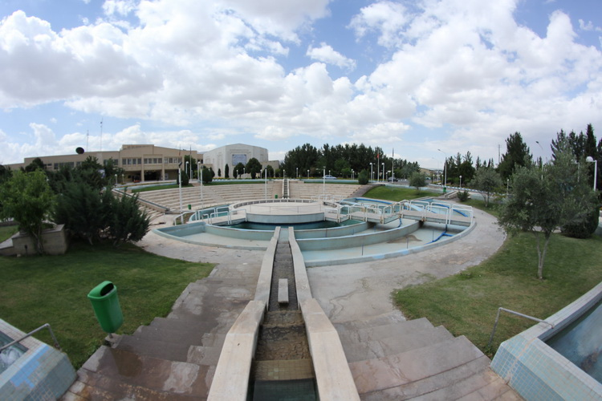

دانشگاه کاشان
اطلاعات کلی در مورد دانشگاه کاشان
دانشگاه کاشان بزرگترین و نخستین دانشگاه شهرستان کاشان است که در شهر راوند قرار دارد. این دانشگاه در سال ۱۳۵۲ خورشیدی تأسیس شد.
تاریخچه
دانشگاه کاشان به عنوان اولین مؤسسهٔ آموزش عالی در منطقهٔ کاشان در سال ۱۳۵۲ توسط محمود اسلامی تأسیس شد و مهرماه ۱۳۵۳ با پذیرش ۲۰۰ دانشجو در دو رشتهٔ ریاضی و فیزیک آغاز به کار کرد.
دانشکده ها
رؤسای پیشین دانشگاه
ارتباط با دانشگاه
© کلیه حقوق متعلق به دانشگاه کاشان میباشد.